Camera distance changes facial proportions. Zoom adjusts the framing.
My classmate helped take the photographs, stepping back and increasing zoom to keep my face approximately the same size. The closest and farthest views show the clearest contrast.
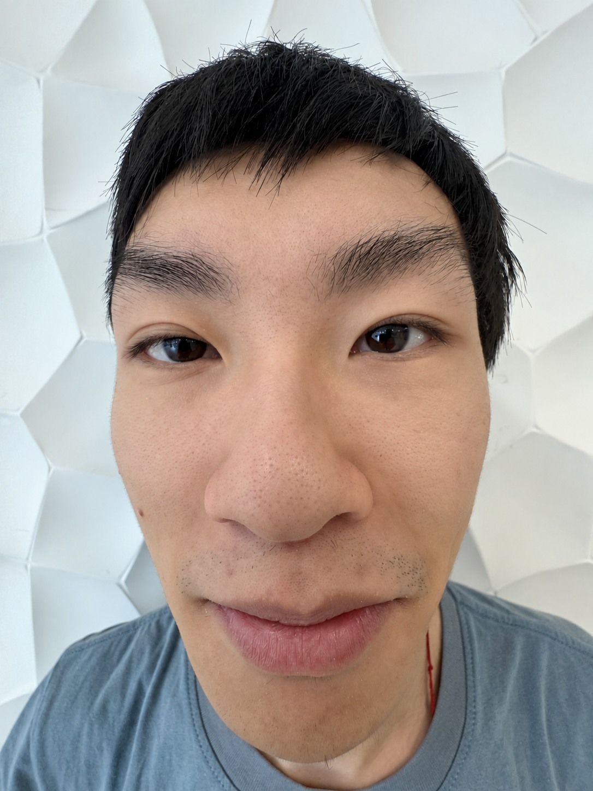
Close up10 cm · 0.5× · 14 mm equivalentStepped back100 cm · 4.0× · 99 mm equivalent
What changes?
In the close portrait, the nose appears larger relative to the ears and the sides of the face. In the farther portrait, the facial proportions look flatter and more balanced. The face remains roughly comparable in size, although pose and framing are not identical.
Moving back changes perspective; zooming in keeps the subject prominent.
SYDE 671 / ASSIGNMENT 1 / PART ONEJAMES XIE
01 / PORTRAIT STUDY / CONTINUED
Five positions. One face.
01 / 10 cm0.5× · 14 mm
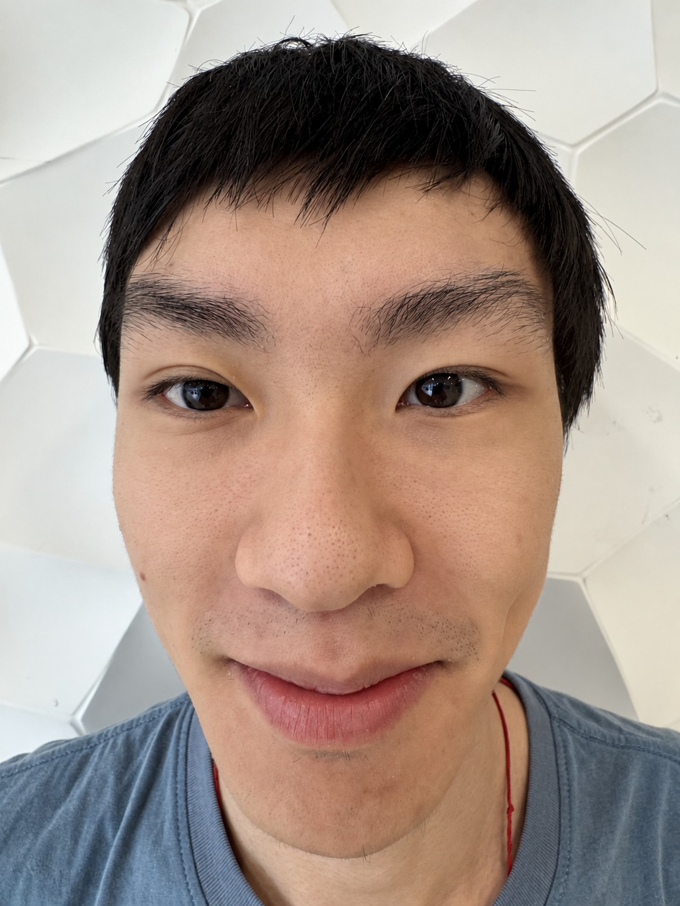
02 / 15 cm0.8× · 20 mm
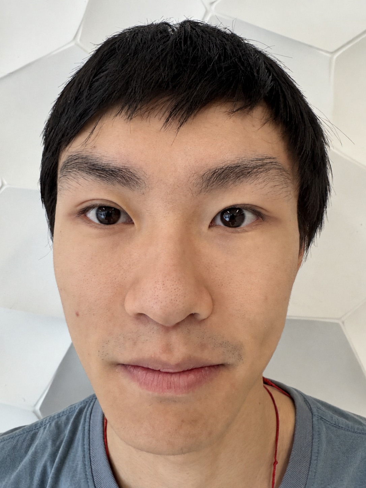
03 / 20 cm1.2× · 28 mm
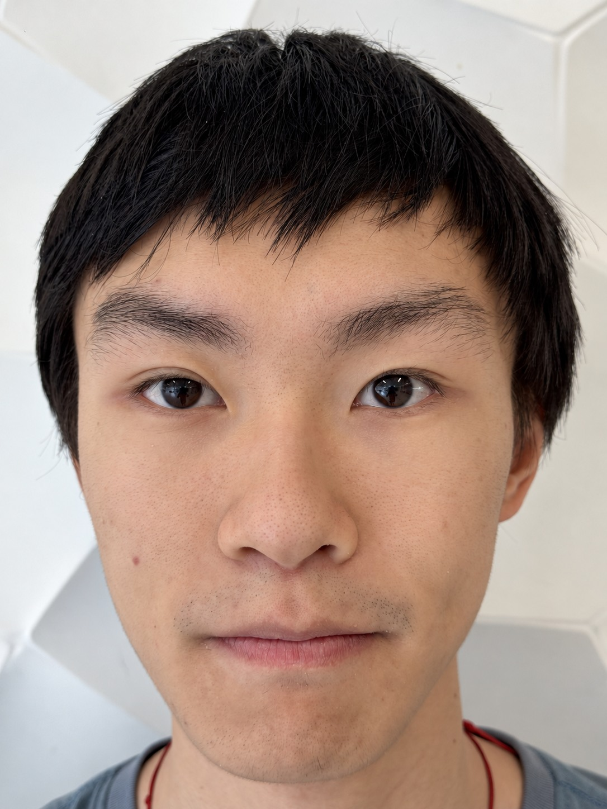
04 / 40 cm2.0× · 48 mm05 / 100 cm4.0× · 99 mm
Sequence from near to far. Distances and on-screen zoom settings are the photographer’s notes; all focal lengths are 35 mm equivalents verified in the original HEIC metadata.
Why the proportions change
In a pinhole-camera model, projected size is proportional to focal length divided by depth: image size ∝ f / Z. The nose is closer to the camera than the ears. At a short camera-to-face distance, that depth difference is a large fraction of the total distance, so the nose is magnified more strongly.
After stepping back, the distances to the nose and ears become more similar in relative terms. Increasing focal length then enlarges the whole face in the image without restoring the close-up perspective.
What zoom alone would do
From a fixed camera position, changing focal length changes the field of view and image scale. In the ideal projection model, it does not change the relative perspective of the facial features. The change in viewpoint is therefore essential to this comparison.
Capture notes
The sequence spans 10–100 cm and 14–99 mm equivalent. This PDF retains the existing webpage’s retouched portrait exports. The experiment is a qualitative visual comparison, not a calibrated measurement of facial geometry; pose, framing, lens processing and retouching are not independently controlled.
Perspective follows camera position. Focal length controls image scale.
SYDE 671 / ASSIGNMENT 1 / PART ONEJAMES XIE
02 / ARCHITECTURAL PERSPECTIVE
The street folds inward.
A campus path appears compressed from farther away and more expansive from closer up.
I began with a distant, zoomed-in view, then walked forward along the path while widening the field of view. The sidewalk, trees and roadside sign provide fixed landmarks for comparison.
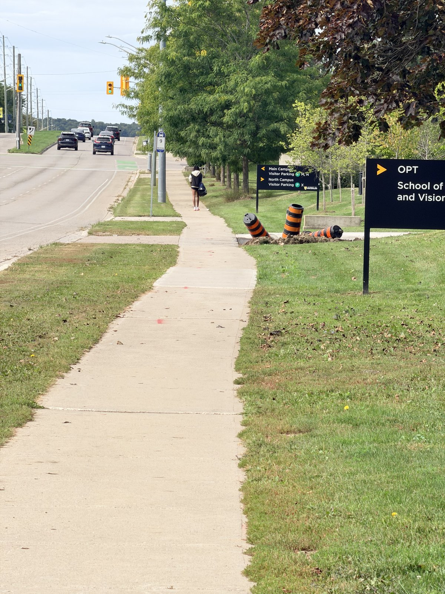
Farther / narrow view200 mm equivalentCloser / wide view24 mm equivalent
What changes?
In the farther view, the trees, sign and background appear more crowded together. In the closer view, the foreground sidewalk spreads outward and the route into the distance feels longer. The comparison is approximate: the framing is not perfectly matched.
The scene stays in place. Changing the viewpoint changes its apparent depth.
SYDE 671 / ASSIGNMENT 1 / PART ONEJAMES XIE
02 / ARCHITECTURAL PERSPECTIVE / CONTINUED
Four positions. One path.
01 / 200 mmIMG_7887
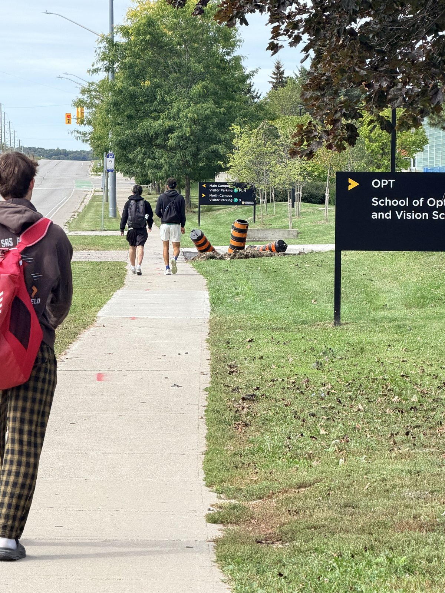
02 / 164 mmIMG_7889
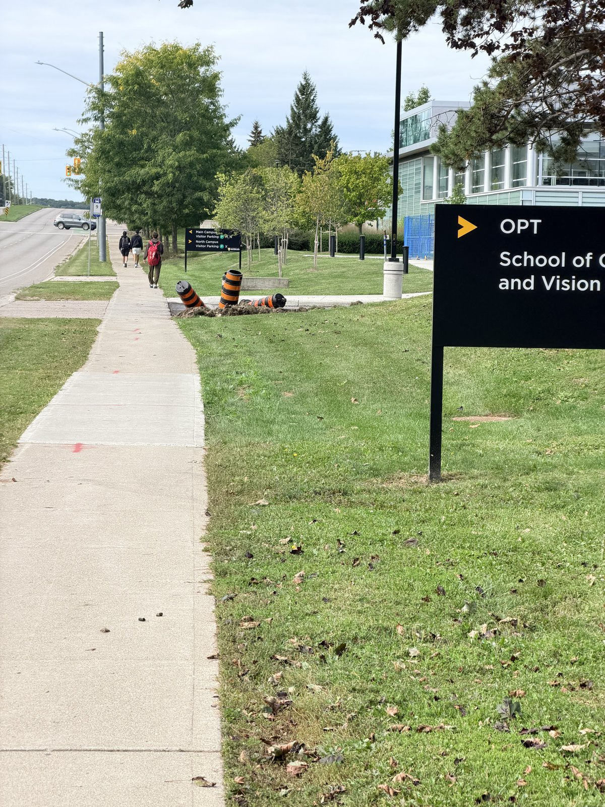
03 / 100 mmIMG_789004 / 24 mmIMG_7891
Capture order while moving forward. All focal lengths are 35 mm equivalents verified in the original HEIC metadata. Camera-to-landmark distances were not measured.
Why the distant view looks compressed
When the camera is far from both foreground and background features, the difference between their depths is relatively small compared with the overall viewing distance. Their apparent sizes become more similar, so the background appears closer to the foreground.
Walking forward makes the near-to-far depth ratio more pronounced. Nearby sidewalk sections and roadside objects grow in the image more rapidly than distant objects. Zooming out keeps more of the scene visible, while the camera movement creates the new perspective.
How to compare the photographs
Follow the stationary sign, tree trunks and sidewalk edges rather than the passerby in the second frame. The person moved between exposures and is not a stable reference. These images illustrate the effect qualitatively; they do not establish a measured compression ratio.
A longer focal length is associated with this compressed view because the camera was also farther away.
SYDE 671 / ASSIGNMENT 1 / PART ONEJAMES XIE
03 / THE DOLLY ZOOM
One sign. A shifting background.
Seven still photographs combine changing viewpoint and zoom into a short animated sequence.
The stop sign is stationary. The GIF orders the original photographs from a near, wide view toward a farther, zoomed-in view. Keeping the sign roughly comparable in size makes the changing background more noticeable.
Frame 01Near / 24 mm
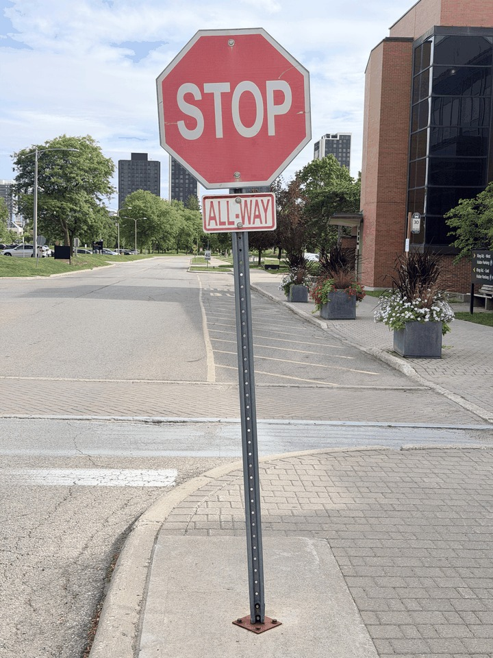
Frame 02Intermediate view
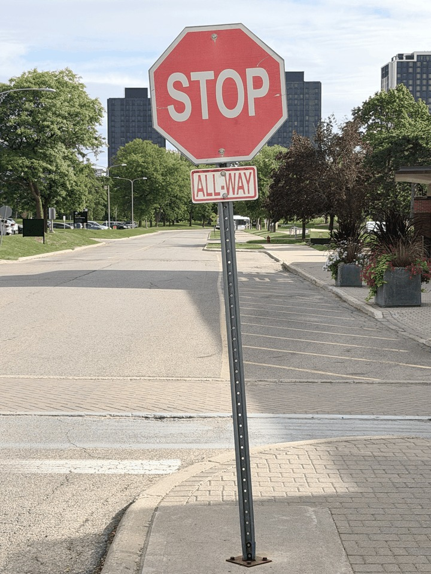
Frame 03Intermediate view
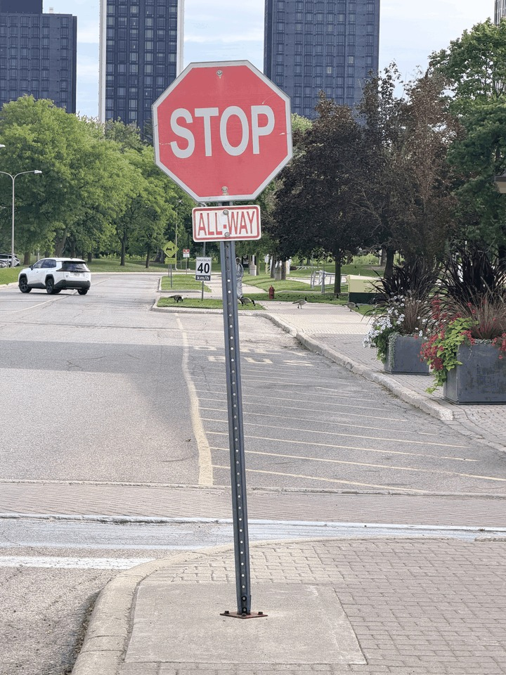
Frame 04Intermediate view
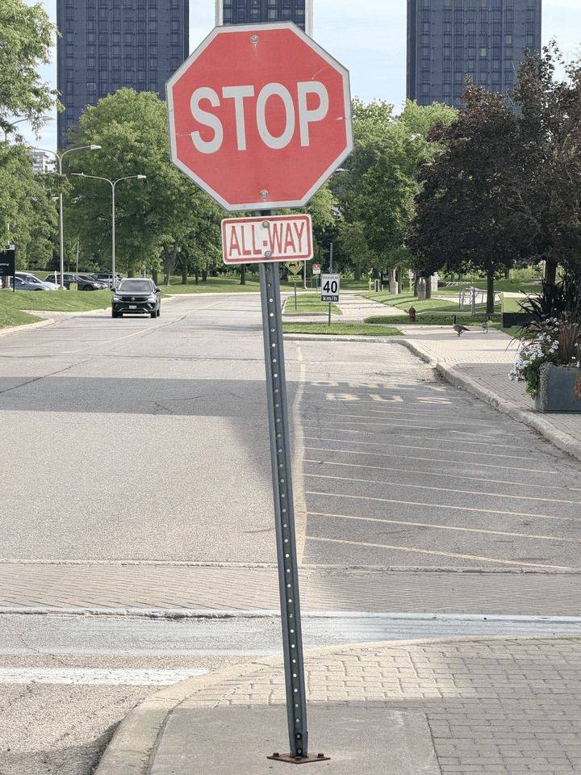
Frame 05Intermediate view
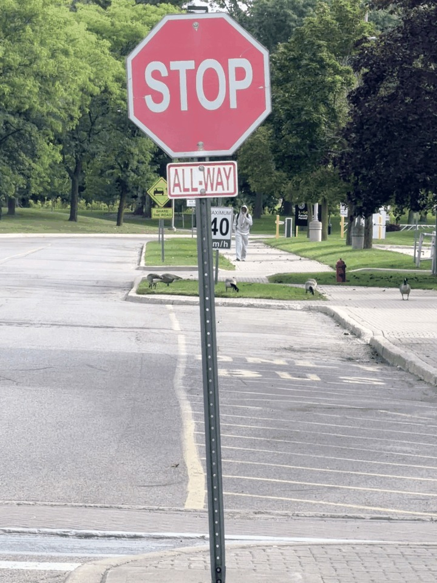
Frame 06Intermediate view
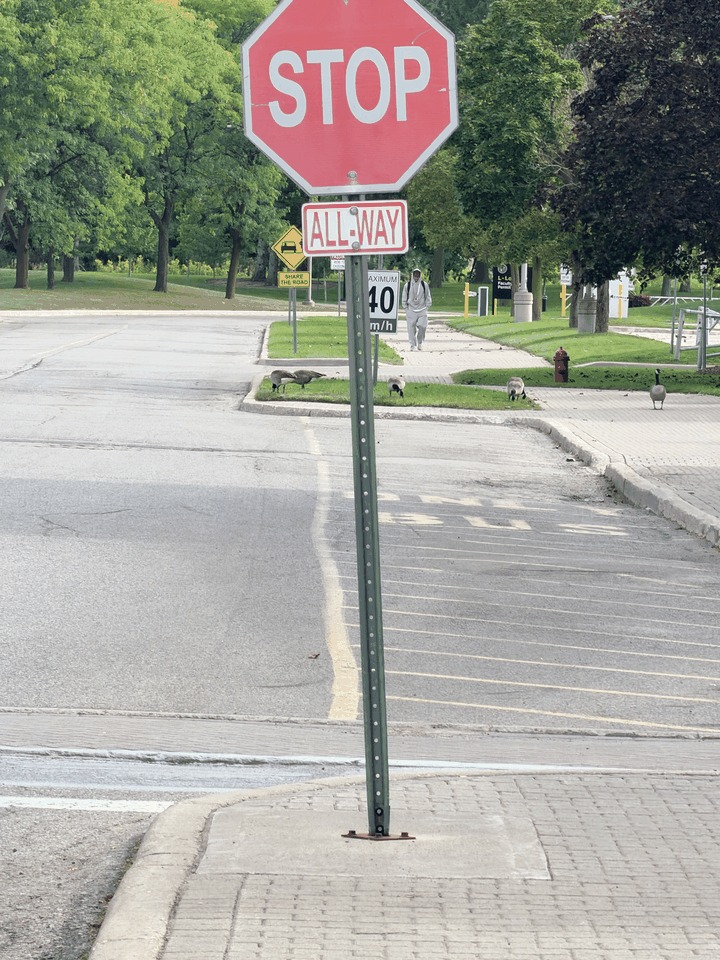
Frame 07Far / 257 mm
All seven GIF frames, in playback order. Endpoint focal lengths are 35 mm equivalents from the original HEIC metadata. Playback order: IMG_7875, IMG_7874, IMG_7872, IMG_7871, IMG_7873, IMG_7870, IMG_7869.
Why the background appears to move
Moving back changes the relative scale of foreground and background. Increasing zoom compensates approximately for the shrinking subject, while the background grows relative to it. This combination produces the characteristic dolly-zoom effect.
The handheld sequence has some variation in sign size and alignment, so the effect is not perfectly stabilized. It uses seven photographic frames; no generated or interpolated frames are added.
Watch the animation: the-dolly-zoom.gif The PDF shows still frames. Open the accompanying GIF or the offline webpage to see motion.